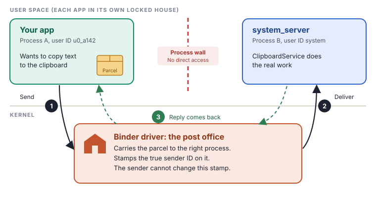
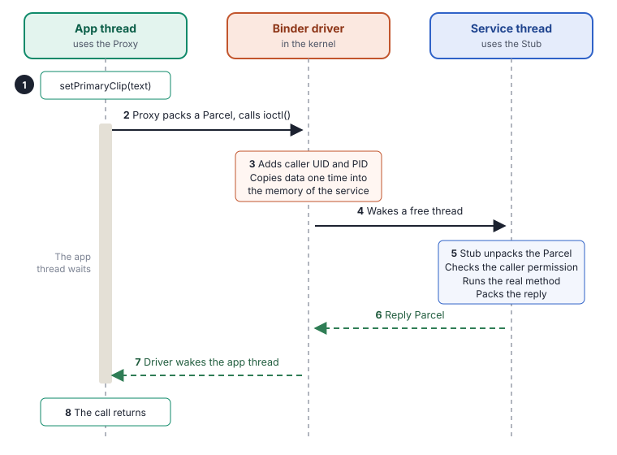

Binder lets one process call a method in a different process, as if the method was in its own code.
Binder is the most important part of Android that most people never hear about. Each time an app shows a notification, gets your location or opens a new screen, Binder carries the message. If you understand Binder, many other chapters become easy.
The problem: each app lives alone
Each app runs in its own process. Each process has its own memory. The kernel makes sure that one process cannot read or write the memory of a different process. This wall keeps your apps safe from each other.
But apps need help from the system. Most system features are not in the app. They are in different processes:
- The clipboard, the window manager and the package manager are in
system_server. - The camera and the audio have their own processes.
- The HALs for the hardware are in vendor processes.
Thus, the app must send a request across the wall and get a reply. This is IPC (inter-process communication). Binder is the IPC system of Android.
Think of each process as a house with a locked door. People in one house cannot go into a different house. To ask for something, they send a parcel through the post office.
In Android, the post office is the Binder driver in the kernel. It takes the parcel from your house and gives it to the correct house. It also puts a stamp with your true name on the parcel. You cannot change this stamp. The receiver always knows who sent the parcel.
There is also a phone book. It gives the address of each service by its name. In Android, the phone book is servicemanager.

The parts of Binder
Binder has five parts. Each part has one job.
| Part | Where it is | Its job |
|---|---|---|
| Binder driver | Linux kernel, /dev/binder | Carries the data between processes. Adds the identity of the caller. |
| servicemanager | A small native program | The phone book. Services register their names. Clients find services by name. |
| Parcel | In both processes | The box. It holds the method arguments or the reply in a flat form. |
| Proxy | In the client process | Looks like the real service. It packs the arguments into a Parcel and sends it. |
| Stub | In the service process | Unpacks the Parcel and calls the real method. Then it packs the reply. |
You do not write the proxy and the stub yourself. You write the interface in a small language with the name AIDL (Android Interface Definition Language). The build tools make the proxy and the stub from it.
One call, step by step
We use a simple example. An app copies text to the clipboard. In the app, the code is one line:
clipboardManager.setPrimaryClip(ClipData.newPlainText("note", "Hello"));But the clipboard is in system_server, not in the app. This is what happens:

- The app calls the proxy.
ClipboardManagerholds a proxy for the clipboard service. To the app, the proxy looks like a normal object. - The proxy packs a Parcel. It writes a code for the method and each argument into a Parcel. Then it gives the Parcel to the Binder driver with a system call,
ioctl(). - The driver adds the identity. The kernel writes the user ID (UID) and the process ID (PID) of the caller. The app cannot change these values. Then the driver copies the data one time, directly into the memory of the service process.
- The driver wakes a service thread. Each service process keeps a small group of threads that wait for Binder calls. This group is the Binder thread pool.
- The stub does the work. It reads the method code and unpacks the arguments. The service checks if the caller has permission. Then it runs the real method and packs the reply into a new Parcel.
- The reply goes back. The service gives the reply Parcel to the driver.
- The driver wakes the app thread. During steps 2 to 6, the app thread waits.
- The call returns. The proxy unpacks the reply. For the app, it was a normal method call.
All of this takes a fraction of a millisecond on a modern phone. A phone does thousands of Binder calls each second.
Four more things to know
One-way calls
Sometimes the app does not need a reply. AIDL lets you mark a method as oneway. The app sends the Parcel and continues at once. It does not wait for the service.
Death notices
A process can stop at any time. A client can ask the driver: "Tell me if this service stops." The method for this is linkToDeath(). The framework uses it to clean up when an app stops.
The size limit
Each process has a buffer for Binder data of about 1 MB. All the calls in progress share this buffer. If you send a very large Parcel, for example a large image in an intent, you get a TransactionTooLargeException. To send large data, send a file descriptor or a shared memory object, not the data.
Three Binder domains
Android has three Binder devices. Each device is a separate world, with its own phone book:
/dev/binderfor the framework and apps./dev/hwbinderfor older HALs that use HIDL./dev/vndbinderfor vendor processes that talk to each other.
This split keeps the vendor code separate from the framework code. Thus, Google can update the framework without a change to the vendor code.
Binder is a main security boundary of Android. Attackers study it closely. Here are the important points:
- The caller identity is true. The kernel adds the UID and PID. A service reads them with
Binder.getCallingUid(). This is the base of all permission checks in Android. - The service must do the check. Binder does not check permissions by itself. Each service must call a method like
enforceCallingPermission(). If a developer forgets this check, any app can use the service. This bug has the name confused deputy: a strong process does a job for a weak process without a check. - Parcels come from untrusted apps. The stub reads data that an attacker can control. A mistake in the unpack code can cause a crash or a memory bug in a system process. Security researchers often use fuzzing tools on Binder interfaces for this reason.
- The driver is kernel code. A bug in the Binder driver gives an attacker a path into the kernel. For example, CVE-2019-2215 was a use-after-free bug in the Binder driver. Attackers used it in real attacks before the repair.
- SELinux controls who can call whom. SELinux rules decide which processes can make Binder calls to which processes. Rules also decide which services each process can find in
servicemanager.
For the curious: inside the code Optional
The driver. The Binder driver is in the kernel source at drivers/android/binder.c. User space talks to it with the ioctl command BINDER_WRITE_READ. The client writes a BC_TRANSACTION command. The service receives a BR_TRANSACTION command. The reply uses BC_REPLY and BR_REPLY.
The one copy. Each process maps a part of its memory to the driver with mmap(). The driver copies the data from the sender one time, into this mapped area of the receiver. Thus, the receiver reads the data with no second copy.
Handle 0. Each process knows remote objects by a number, the handle. Handle 0 is special. It always points to the context manager, which is servicemanager. Thus, each process can find the phone book with no lookup.
The native library. The C++ code is in frameworks/native/libs/binder/:
BpBinderis the native proxy ("Binder proxy").BBinderis the native object on the service side.IPCThreadStatetalks to the driver for each thread.Parcelpacks and unpacks the data.
The Java side. android.os.Binder and android.os.BinderProxy are in frameworks/base/core/java/android/os/. They connect to the C++ code through JNI, in android_util_Binder.cpp.
A small AIDL file. From this file, the build makes a Java class IGreeter.Stub and a proxy class inside it:
// IGreeter.aidl
package com.example;
interface IGreeter {
String greet(String name);
oneway void ping();
}These commands are safe. They only read information.
# List all services in the phone book (servicemanager)
adb shell service list | head -20
# Is the clipboard service there?
adb shell service check clipboard
# Count the services that dumpsys can read
adb shell dumpsys -l | wc -lOn an emulator, you can also see the Binder devices. First, get root with adb root. This works only on emulator images without Google Play.
adb root
adb shell ls /dev/binderfsKey terms
- IPC
- Inter-process communication. A way for processes to send data to each other.
- Binder driver
- The part of the kernel that carries Binder data.
- servicemanager
- The phone book of services.
- Parcel
- The container for the data of one call.
- Proxy
- The object in the client that looks like the service.
- Stub
- The object in the service that receives the calls.
- AIDL
- The language that describes a Binder interface.
- oneway
- A call that does not wait for a reply.
- UID
- User ID. Each app has its own UID.